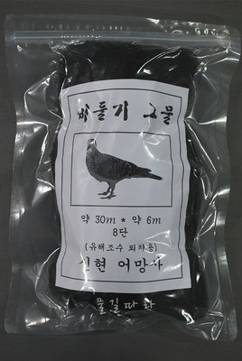
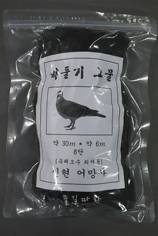

종로구여행의 시작


마포구
We caught glimpses of faces at most of the windows peering curiously at us and watching our progress through the town.
Much to our surprise, when about two miles outside Reykjavik, we met our fellow-passenger by the Ceres, him with whom we had lunched at Thorshavn on the outward journey. We had left him behind at that port, and he had intended to stay for several weeks at the Faroes and to return thence to England; but having found things rather slow there, he had followed us to Iceland by the next steamer; hence the meeting on the road.
We created some sort of sensation as we entered the capital of Iceland. The clocks were striking ten as we clattered down the long main street; it was a time when the populace were at leisure and on the street, and they evinced no little curiosity as we rode by them. They were congregated in small groups, and it was evident to us that we were being discussed—and no wonder, for we were a motley-looking cavalcade! We must have presented a very grotesque appearance, clad as we were in oilskins, and covered with mud from head to foot: it had been raining at intervals on the way, and we had had a rather disagreeable journey.
We caught glimpses of faces at most of the windows peering curiously at us and watching our progress through the town. Many of the members of the groups, by the wayside saluted as we passed by—the Icelanders are a polite people, as a rule, and they doff their head-gear in salutation to strangers. So we progressed, being saluted, and acknowledging the salutes. It was a sort of triumphal entry, for the news had been carried forward by one of the guides, who was some little distance ahead with some of the pack-ponies, that we had just crossed the country by way of the uninhabited interior. All things come to an end, and so did our journey when we reached the end of the main street in Reykjavik, for there, at a great wooden building four stories high, we took up our quarters, and the crossing of Iceland was an accomplished fact.
성북구비둘기
We were six in all—a semi-scientific party. There was Miss J. A. Hastie, a woman who has travelled much in Europe, Asia, Africa, and America, and who is not unacquainted with our Colonies at the Antipodes, or with the islands of the South Seas. She was specially interested in the botany of the country, in its folklore, and in the people. Then there was Captain W. H. Cope; he had been at sea for the greater part of his life, and had in the course of his journeyings seen much of the world; he was our nautical adviser, and we referred to him in matters connected with the sea. W. Glen, Miss Hastie's cousin, was known as the "handy man" of the party. If anybody was in difficulties, Glen was always on the spot to lend a helping hand. He produced all sorts of things at the right moment. Did any one require a screw-driver, then Glen had it; want a corkscrew, Glen could supply it; a pair of scissors, he produced them—some string, a strap, it was all the same. If a camera struck work, Glen could render the strike ineffective, for he carried two, and could lend one without interfering with his own photographic work. A. W. Hill, of King's College, Cambridge, was our botanist—who describes what he saw. H. H. Thomas, of Balliol, paid special attention to the geological formation of the country that we traversed, and he was frequently to be seen, camera in hand, taking shots at interesting formations—a glaciated lava surface, a volcanic vent, or an immense "erratic" boulder or "perched block," for instance; he also sketched industriously, and sometimes paced the ground compass in hand in order that he might record in his note-book the direction of a line of fissure, or the position of hot springs along that line; or something else of interest to geologists in particular. I was the geographer, whose mission it was to make a map of a small portion of the country traversed, to get a general idea of its conformation, and to note valleys and mountains, ice-fields and snow slopes, lava flows and hot springs, mighty rivers and tiny rivulets.

 

Next day rain, fog, and mist prevailed, so there was much whist-playing and smoking below, and much blowing of whistle above. Towards evening we were off the coast of Iceland; the land was not visible, for we were enveloped in fog, but there was no doubt about it, for we could hear that land was not far distant. It may seem strange, but it was a fact, we were really feeling our way along the coast by the aid of the steam-whistle. The land thereabouts rises abruptly from the sea, and the echoes from the sheer faces of rock enabled the officers of the vessel to judge their distance. We went dangerously near to another vessel in the fog, but soon afterwards it cleared off a bit, and there, just abeam on the starboard side, was the other vessel, sufficiently close to be a dangerous neighbour in thick weather. At midnight we were going full speed ahead, but when I awoke at seven in the morning it was to find that our experiences of fog were not at an end, that we were again in a very dense one, and that we were lying-to. After breakfast it lifted sufficiently to allow of a course being shaped for Northfjord, our first port of call in Iceland. Much of the scenery of this fjord was obscured by the thick atmosphere, but occasional glimpses through rifts proved that we were missing many fine scenes that are on view when the conditions are favourable. The first sight of Iceland was obtained at Dalatangi Point, four or five miles to the north of the entrance to Northfjord. In the fog we had gone too far north. Other glimpses on the way were of a corrie near Dalatangi, and the face of the mountains near Mjofifjord. Our stay at Northfjord was of but short duration, and there was no time to go ashore, so the only view we had of the town was obtained from the vessel's deck.
동작구동작찬가
(노들의노래)


관악구Humans of 괴식
어쩌다가 짜장면에 딸려오는 단무지 안 뜯은걸 발견하면 그 날 저녁 반찬은 따로 걱정할 필요 없어요. — Christopher Oh
관악구 서림동
“관악구 서림동에서 ‘잠만 자는 방’ 거주 중이에요. 개인 냉장고는 없고 층마다 공용 냉장고 썼었는데 작정하고 훔쳐가는 사람이 있더라구요. 몇 번 경찰도 불렀었는데 증거가 없어서 누군지 잡을 수가 없었어요.”
“그때부터 열받아서 공용 냉장고 안 쓰고 동네 실개천에다가 물건들 묶어놓기 시작했어요. 사실 동네 개천을 유심히 들여다보는 사람이 없잖아요. 산책할 때 옆에 물 흐르면 기분 좋으니까 있는 거지. 그래서 새벽같이 일어나서 음료수 등등 노끈으로 묶어서 담궈놓고 와요.”
“계속 둥둥 떠서 돌덩이를 넣어놔야 해요.”
관악구 청림동
“저는 종교인입니다. 사실 군대 다닐 때부터 종교를 가지기로 마음을 먹었어요. 교회가 참 좋더라구요. 일요일에 들를 때마다 간식이니 밥이니 다 챙겨주시고. 이렇게 당장 허기진 자부터 구제를 해주시는데 어찌 주 예수를 안믿을 수 있겠어요? 제대하고 나서도 고민을 좀 하다가 계속 다니기로 했어요. 1년 365일을 7로 나누면 52주죠. 그럼 일요일이 52번 정도 온다는 건데, 그럼 1년에 52끼를 예수님께서 주시는 거잖아요. 그런 생각이 딱 드니까 하느님 나라에 안갈 수가 없더라구요.”
“그래서 본격적으로 기독교인이 되기 전 견학을 가서 조리 시설이 구비되어 있는지를 다 살폈어요. 그러니까 보통 이 정도 (교회의) 사이즈면 얼만큼 (급식을) 주겠다 싶은 감이 생기더라구요. 그렇게 해서 이곳 집사님 등등과 인연을 맺은 게 벌써 2년째예요. 이곳 사람들과 따로 봐야할 일이 생기면 주일 11시 예배 끝나고 급식실에서 보자구 하죠.”
관악구 대학동
“3월이나 9월, 학기 초가 되면 다같이 모여서 음식을 시켜먹는 일이 많아지잖아요. 그럴 때면 저도 덩달아 바빠져요. 이 때 부지런히 돌아다니면서 모아두면 최소 두 달치 식재료는 확보할 수 있거든요. 과방이나 라운지 같은 곳들 잘 살펴보면 안 먹고 버리고 간 핫소스나 치즈 가루, 피클 같은 것들이 많아요. 저는 돌아다니면서 그걸 주워 모으아서 집에서 요리할 때 활용하는거죠. 어쩌다가 짜장면에 딸려오는 단무지 안 뜯은걸 발견하면 그 날 저녁 반찬은 따로 걱정할 필요 없어요. 아, 이 케찹이요? 케찹은 학교 밖에서 햄버거 먹으러 갈 때 항상 많이 달라고 해서 챙겨나와요. 맞다, 커피숍이나 식당에서 공짜로 주는 냅킨 주워 모으면 화장지 따로 살 필요 없는 것 정도는 알고 계시죠?”
“요즘 라면값도 엄청 오른거 아시죠. 이제 1000원 짜리 한 장으로 라면 하나 사기 아슬아슬해요. 그래서 전 라면을 완제품으로 사지 않고 항상 업소용 사리와 대용량 스프를 따로 사서 요리해 먹죠. 그런데 요즘은 이렇게 먹는게 너무 질려서, 다른 요리도 이것저것 만들어 먹어요. 제일 쉬운건 물 없이 라면 스프랑 파마산 치즈를 넣어 볶아 먹는 치즈볶이에요. 이게 쭉쭉 늘어나는 모짜렐라 치즈는 아니지만, 치즈향은 충분히 느낄 수 있어서 좋더라구요. 너무 느끼하다 싶으면 핫소스 뿌려도 맛있구요. 면만 먹는게 질린다 싶으면 햇반 사다가 데우고 라면스프로 국을 끓여서 같이 먹어요. 단무지나 김치 같은거 있으면 따로 반찬도 필요 없구요. 파스타 이런거 먹고 싶을때는 케찹을 좀 졸여서 삶은 라면사리랑 비벼먹어요. 스파게티가 뭐 별건 아니잖아요.”
케찹으로 소스 만들어서 유사 스파게티
관악구 청룡동
“맨날 라면 끓여먹고, 볶아먹고, 라면스프국 끓여서 밥이랑 먹고, 하다보면 지겨워질 때가 오죠. 너무 한 가지 음식만 먹으면 건강에도 안 좋구요. 그런데 가진 돈으로 구할 수 있는 식재료는 한정적이고, 밖에 나가서 사먹을 돈도 없잖아요.”
“그런데 아파트에서 짜장 그릇 발견하기가 쉬워요. 한 층에 10가구, 총 23층이니까 이 동에만 230세대가 살아요. 확률적으로 하루에 한 집도 짜장면을 안 시켜 먹기는 힘들죠.”
“짜장밥 먹으려구요.”
On emerging from the fjord and putting out to sea, we encountered a slight swell from the west, so the vessel rolled a bit; it was really not much, but being the first time during the voyage, it was much disliked by those who were not proof against mal de mer. The clear atmosphere was soon left behind, for we entered another fog bank when only a few miles distant from the land. At once the music of the steam-whistle was resumed, and our ears were again tortured by its shrill blasts.
Just below the bridge a very remarkable sight is to be seen. For more than half a mile along the right bank of the river a series of cascades and waterfalls flow into it. The water issues from beneath the lava of which the steep bank is composed, and then flows down its side; it is a very striking proof of the great extent of some of the subterranean rivers. Just above the bridge there is a very fine fall in the Hvitá, known as Barnafoss; though fine, it cannot be compared with Gullfoss in grandeur, and the glory of this part of the river is the series of cascades on its right bank. The spot is supposed to have been named from the drowning of two children near the fall—Barnafoss, the children's waterfall; but the minister at Reykholt declared that the tale is not true, and that the name is more likely to have been corrupted from Bjarni, which is a man's name. It is worthy of note that the birch woods seem to flourish best in the decaying lava in the scoriaceous lava-fields; it also seems to do well in soil produced from liparite, for it grows high up on the east side of the liparite mountain, Tunga.
강남구능력개발센터
송파구샤롯데월드~
Gullfoss is one of the sights of Iceland. It is a magnificent waterfall on the Hvitá, where the white water of the river cascades over a series of step-like barriers stretching from side to side, and then plunges finally over a ledge of very hard rock into a yawning abyss more than a hundred feet deep, whence it throws up clouds of spray that are carried hither and thither as the wind sweeps first this way and then that; so thick is the spray, that one's clothing soon becomes saturated on incautiously getting into it.
Gullfoss is one of the finest waterfalls in Europe, and it is only surpassed in grandeur, if at all, by one or two others in Iceland. We saw the falls at their best, for when we arrived the sun was shining brightly and a rainbow playing over the spray as it rose from the gorge. It is true that the sky clouded over afterwards, and that rain began to fall before we left Gullfoss, but we carried away the impression of the broken waters of the cascade sparkling in the sun, and of the colours of the rainbow playing on the spray over the ravine. The water has carved out a deep gorge in the basalt, and below the falls there are many good specimens of basaltic columns. In the lower part of the gorge there are the picturesque remains of a very fine hard dyke that has a much softer one beside it. These remains are to be seen on both sides of the river, and they have assumed the outline and form of a number of castellated buildings perched high upon prominent peaks.